Pasticceria e panetteria · Centro storico di Vicenza
Quando la lievitazione incontra il design.
Lievitati, sfoglie e pane esposti uno a uno, come opere in una galleria. In Corso Fogazzaro 142, nel cuore di Vicenza.
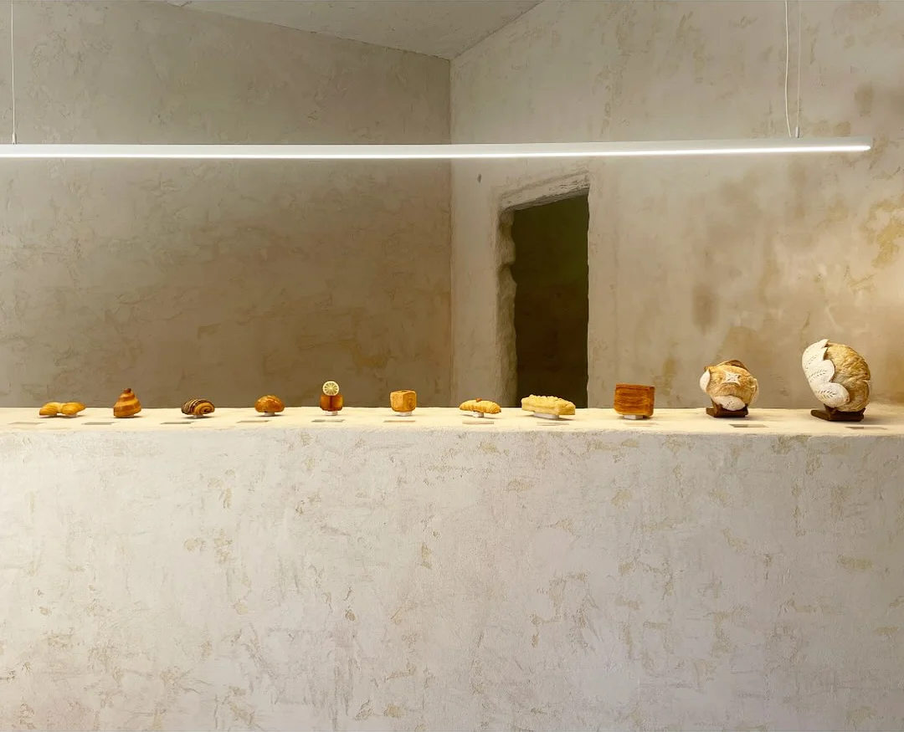
Il fondamento
Il pane: stessa tecnica, tempi più lunghi
Chiude la collezione. L'impasto riposa più a lungo, poi la lama lo incide a mano.
La collezione
Da fuori e da dentro
Ogni pezzo si guarda due volte: intero, poi al taglio. Scorri con calma.
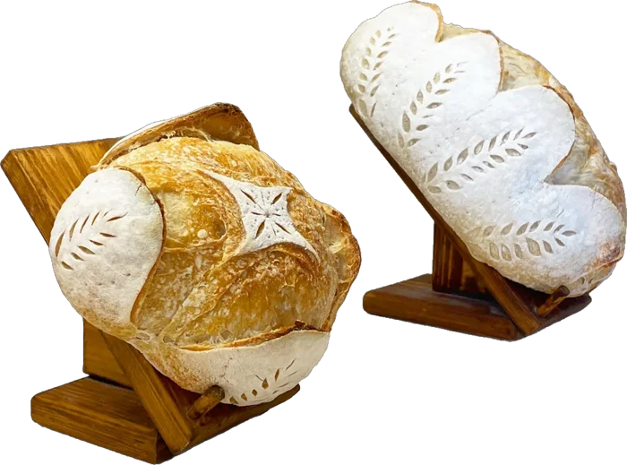
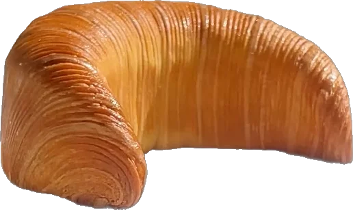
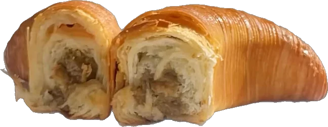
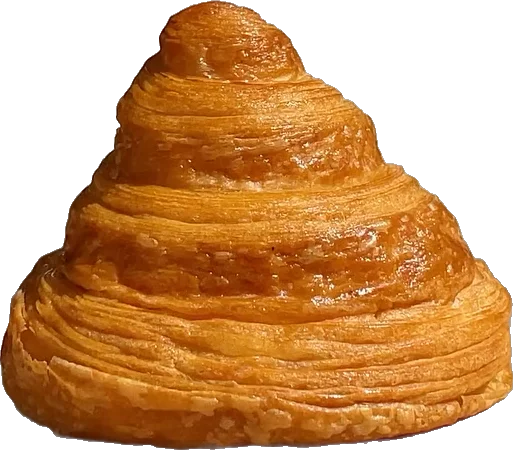
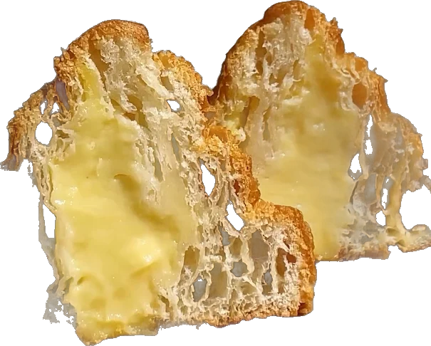
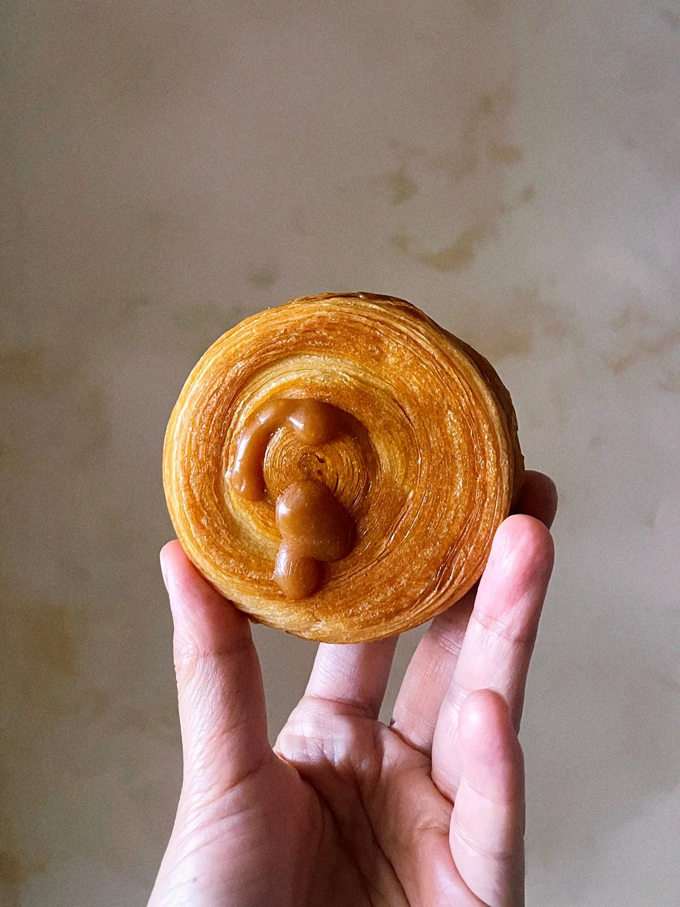
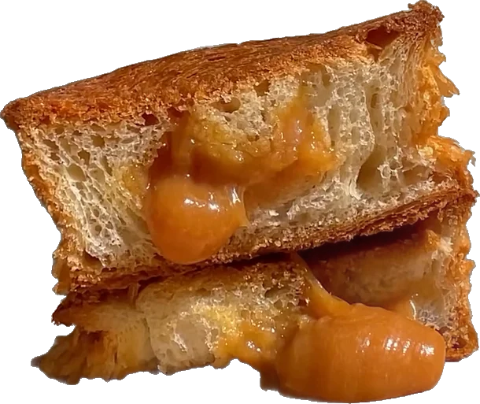
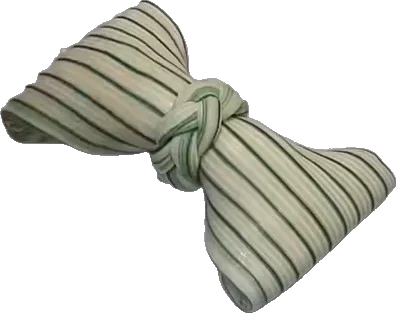
Il fondamento
Il pane
Stessa tecnica, tempi più lunghi. [Sezione provvisoria: la regia del pane arriva nella fase 3.]
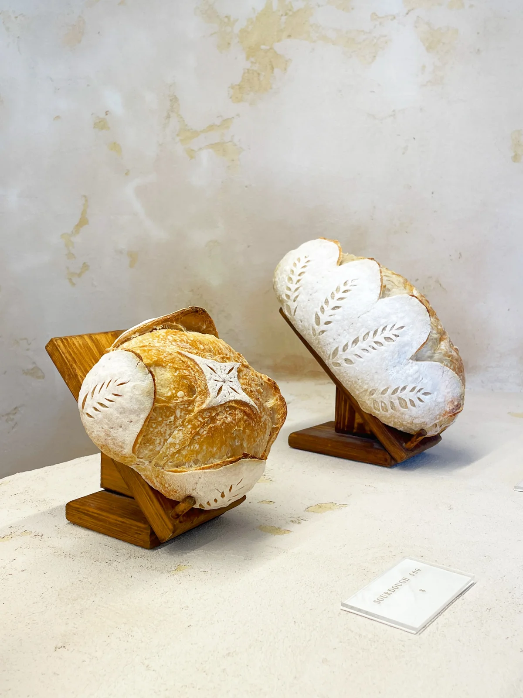
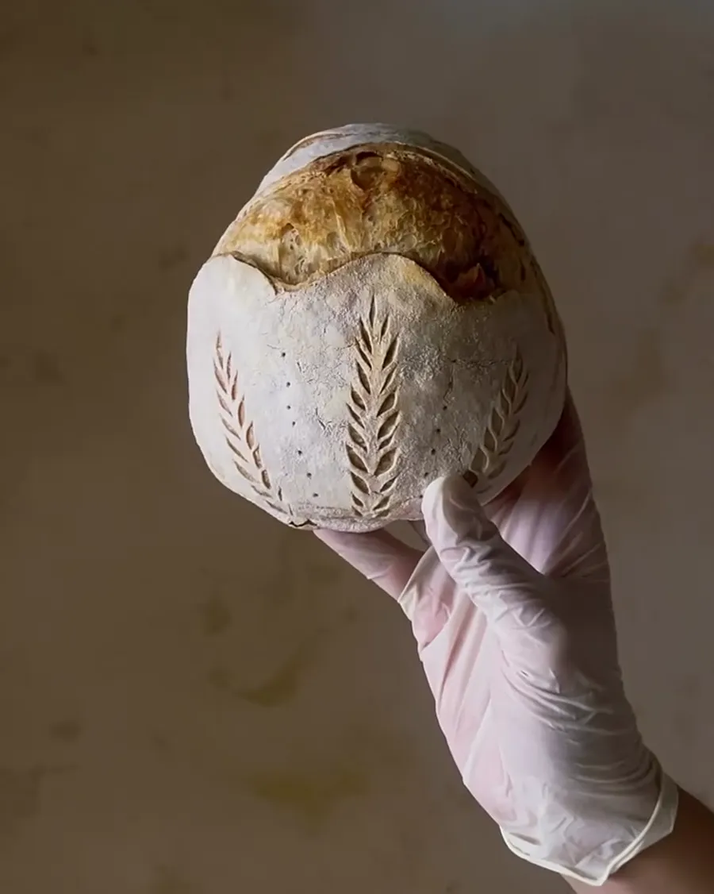
Prima mostra
IRA: un'opera in acciaio, un dolce che le risponde
VINCI ospita IRA, un'opera di design in acciaio di Superfine, marchio specializzato in arredi di lusso per animali domestici.
Alla mostra si accompagna il dolce IRA, ispirato all'opera: cioccolato, praliné di mandorle e crema alle nocciole.
La visita
Tre tempi, senza fretta
Da VINCI si entra come in una galleria e si esce con il sacchetto del pane.
Entra
Pareti in calce, una linea di luce, un bancone lungo. I prodotti sono esposti uno a uno, ben distanziati.
Scegli
Guarda da vicino, chiedi cosa c'è dentro. Ogni creazione ha un nome e una storia breve.
Porta con te
Per la colazione, per la tavola o per un regalo. La mostra, invece, resta in negozio.
Dove siamo
Ti aspettiamo in centro a Vicenza
VINCI
- Indirizzo
- Corso Antonio Fogazzaro, 142
36100 Vicenza VI - Orari
- Mar - Dom 9:00 - 13:00
Ven - Sab anche 17:00 - 20:00 - @vinci_vicenza
A presto
Una colazione, un regalo o solo curiosità?
Passa in Corso Fogazzaro: il bancone è allestito ogni mattina.